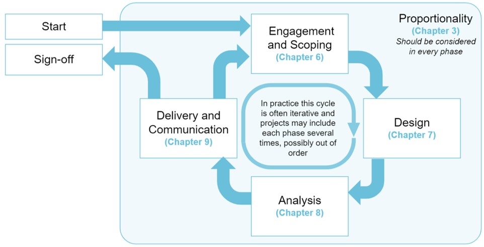

1 Introduction
This version of the AQuA Book is a preliminary ALPHA draft. It is still in development, and we are still working to ensure that it meets user needs.
The draft currently has no official status. It is a work in progress and is subject to further revision and reconfiguration (possibly substantial change) before it is finalised.
The Analytical Quality Assurance (AQuA) Book provides guidance on producing quality analysis for government to support well informed decision-making that creates better outcomes and improve the lives of citizens.
The AQuA Book has made a significant contribution to the cultural change in assurance practices in government by clearly setting out the core framework for assuring all forms of analytical evidence.
1.1 The updated version (2025)
The last version of the AQuA Book was published in 2015, following Sir Nicholas Macpherson’s Review of quality assurance of government models. Since then assurance has become part of the fabric of good practice for developing evidence to support policy development, implementation and operational excellence.
The world of analysis has developed since we published the first edition of the AQuA Book. Increasingly, in our data driven world, the insights provided by analysis underpin almost all policies and help to support operational excellence. At the same time, our working practices have developed. For example, the dominant analytical tools when we wrote the last edition were spreadsheets and proprietary software. We have now broadened the range of methods we use to include open-source software, machine learning and Artificial Intelligence (AI).
Based on feedback from our users, for this new edition we have added guidance on:
- multi-use models - large models used for many purposes with many stakeholders
- assuring black box 1 analysis, including AI
- development, maintenance and continuous review
- working with third parties such as contractors and academic groups
- publishing models
We provide improved guidance on what a proportionate approach to assurance means and have made the whole guide relevant to all types of analysis.
The AQuA Book is a vital supporting guide for the Analysis Function Standard. This Standard refers extensively to the AQuA Book and notes that the “detailed guidance on the analytical cycle and management of analysis included in the Aqua Book should be followed.”
It is also referred to by the Green Book, the Magenta Book and other Functional Standards, such as the Finance Function Standards.
1.2 Who the AQuA Book is for
The new edition is relevant to anyone who commissions, uses, undertakes or assures analysis. It is about the whole process of producing analysis that is fit for purpose.
We would like to see producers and users of analysis from all backgrounds using this book, especially those producing analysis, evidence and research to support decision-making in government. The book can help users of analysis make the most of work that has been commissioned and senior leaders with an interest in analytical assurance. The AQuA Book is also for anyone carrying out analysis, including:
- operational researchers, statisticians and economists
- geographers
- finance professionals
- actuaries
- social researchers carrying out qualitative research
- data scientists developing advanced analytics
1.3 How to use this book
The AQuA Book has been developed to help the analysis community:
- publish analytical insights that will be used for major decisions and operations
- minimising the risk of errors arising that cause operational, business or reputational damage
- create greater trust in analysts’ work
- ensure appropriate quality assurance is in place to help to manage mistakes, handle changes to requirements and ensure appropriate re-use of analysis
- develop the confidence in analysis that is needed for transparency and public openness
- support the analytical assurance that is required for audit purposes 2
The first four chapters of this book cover definitions and themes, while the second half of the book goes into more detail on the analytical life cycle. This can be pictured as follows: 
Each chapter in the second half of the book is structured as follows:
- an overview of the stage and chapter
- Roles and responsibilities
- Assurance activities
- Documentation
- Uncertainty
- Black box models
- Multi-use models
- any other guidance specific to the stage of the life cycle
The AQuA Book uses the following terms to indicate whether recommendations are mandatory or advisory:
- ‘shall’ denotes a requirement, a mandatory element, which applies in all circumstances and at all times
- ‘should’ denotes a recommendation, an advisory element, to be met on a ‘comply or explain’ basis
- ‘may’ denotes approval
- ‘might’ denotes a possibility
- ‘can’ denotes both capability and possibility
- is/are is used for a description
This is consistent with the UK Government Functional Standards.
Principles of analytical quality assurance
No single piece of guidance provides a definitive assessment of whether a piece of analysis is of sufficient quality for an intended purpose. There are some important principles that support that commissioning and production of fit-for-purpose analysis.
1.3.1 Proportionate assurance
Quality assurance effort should be appropriate to the risk associated with the intended use of the analysis and the complexity of the analytical approach. These risks include financial, legal, operational and reputational effects.
You can read more about proportionality in chapter [3]
1.3.2 Assurance throughout development
Quality assurance should be considered throughout the whole life cycle of the analysis. Effective communication is crucial when understanding the problem, designing the analytical approach, conducting the analysis and relaying the outputs.
You can read more on the analysis life cycle in chapter [5].
1.3.3 Verification and validation
Analytical quality assurance is more than checking that the analysis is error-free and satisfies its specification (verification). It should also include checks that the analysis is appropriate and fit for the purpose for which it is being used (validation).
You can read more on verification and validation in chapters [5-9].
1.3.4 Uncertainty
It is important to accept that uncertainty is inherent in the inputs and outputs of any piece of analysis. Chapter [8] covers assurance of the analytical phase of the project, including the treatment of uncertainty.
You can read more about uncertainty in the Uncertainty Toolkit for Analysts in Government.
1.3.5 Analysis with RIGOUR:** One acronym some users find helpful to consider when completing analysis is RIGOUR. This is described in the box below.
Throughout all the stages of an analytical project, the analyst should ask questions of their own analysis. The helpful mnemonic “RIGOUR” may assist:
- Repeatable
- Independent
- Grounded in reality
- Objective
- Uncertainty-managed
- Robust
Repeatable: For an analytical process to be considered valid we might reasonably expect that the analysis produces the same outputs for the same inputs and constraints. Different analysts might approach the analytical problem in different ways, while methods might include randomised processes. In such cases, exact matches are not guaranteed or expected. Taking this into account, repeatability means that if an approach is repeated the results should be as expected.
Independent: Analysis should be free of prejudice or bias. Care should be taken to balance views appropriately across all stakeholders and experts.
Grounded in reality: Quality analysis takes the Commissioner and Analyst on a journey as views and perceptions are challenged and connections are made between the analysis and its real consequences. Connecting with reality like this guards against failing to properly grasp the context of the problem that is being analysed.
Objective: Effective engagement and suitable challenge reduce the risk of bias and enables the Commissioner and the Analyst to be clear about the interpretation of results.
Uncertainty-managed: Uncertainty is identified, managed and communicated throughout the analytical process.
Robust: Analytical results are error free in the context of residual uncertainty and accepted limitations that make sure the analysis is used appropriately.
Black box: system which can be viewed in terms of its inputs and outputs (or transfer characteristics), without any knowledge of its internal workings.↩︎
Managing Public Money, Annex 4.2 Use of models↩︎